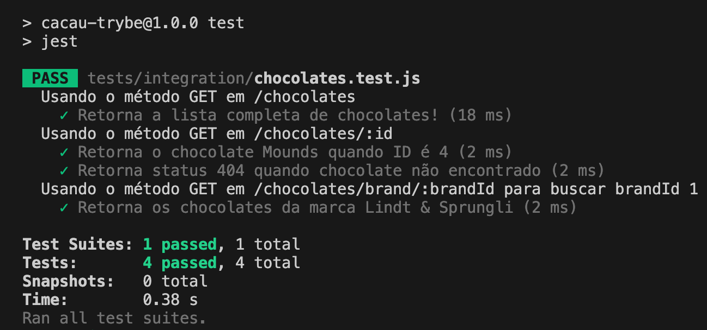

4.8 - Testando Novos Cenários
2 min de leitura
2 blocos de código
1 vídeo
Vamos agora expandir nossa aplicação com novas rotas e incluir os testes para validá-las.
Adicionando novas Rotas
Vamos adicionar as rotas GET /chocolates/:id e GET /chocolates/brand/:brandId:
// src/app.js
// ... Restante do código
app.get('/chocolates/:id', async (req, res) => {
const { id } = req.params;
const cacauFile = await readCacauTrybeFile();
const findChocolate = cacauFile.chocolates.find((chocolate) => chocolate.id === Number(id));
if (!findChocolate) return res.status(404).json({ message: 'Chocolate Not Found!' });
return res.status(200).json({ chocolate: findChocolate });
});
app.get('/chocolates/brand/:brandId', async (req, res) => {
const { brandId } = req.params;
const cacauFile = await readCacauTrybeFile();
const findChocolatesByBrand = cacauFile.chocolates
.filter((chocolate) => chocolate.brandId === Number(brandId));
return res.status(200).json({ chocolates: findChocolatesByBrand });
});
// module.exports = app;
De olho na dica 👀: Analise o código com atenção para entender como as rotas estão estruturadas. Em seguida, faça requisições usando um API Client para conferir os resultados.
Testando as Novas Rotas
Agora, vamos construir testes para essas novas rotas:
// tests/integration/chocolates.test.js
// ... Restante do código
describe('Usando o método GET em /chocolates/:id', () => {
test('Retorna o chocolate Mounds quando ID é 4', async () => {
const response = await request(app)
.get('/chocolates/4')
.expect(200);
expect(response.body.chocolate).toEqual(
{
id: 4,
name: 'Mounds',
brandId: 3,
});
});
test('Retorna status 404 quando o chocolate não é encontrado', async () => {
const response = await request(app)
.get('/chocolates/99')
.expect(404)
expect(response.body).toEqual({ message: 'Chocolate Not Found!' })
});
});
describe('Usando o método GET em /chocolates/brand/:brandId para buscar brandId 1', () => {
test('Retorna os chocolates da marca Lindt & Sprungli', async () => {
const resultExpected = [
{ id: 1, name: 'Mint Intense', brandId: 1 },
{ id: 2, name: 'White Coconut', brandId: 1 },
];
const response = await request(app)
.get('/chocolates/brand/1')
.expect(200);
expect(response.body.chocolates).toEqual(resultExpected);
});
});
Confira que praticamente os nossos testes se mantiveram os mesmos, mas podemos destacar dois pontos:
- O
.get()varia de acordo com a rota testada, refletindo as especificidades de cada cenário. - Quando utilizamos o
response.body, podemos validar o conteúdo da resposta acessando a chave específica esperada para cada teste. No último teste, acessamos a chave utilizando esse formatoresponse.body.chocolates.
Agora, execute os testes com npm test e confira os resultados detalhados de cada um dos cenários.

Para fixar os conceitos sobre testes de integração, assista ao vídeo a seguir:
Minhas anotações
Atalhos: ← → navegar · Ctrl K ou / buscar